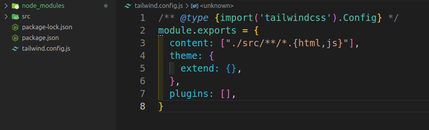
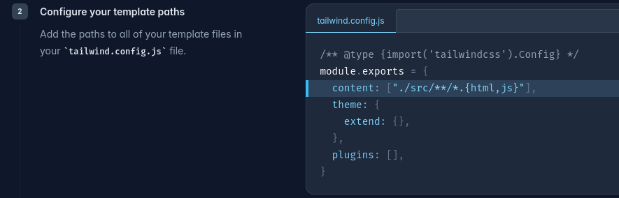
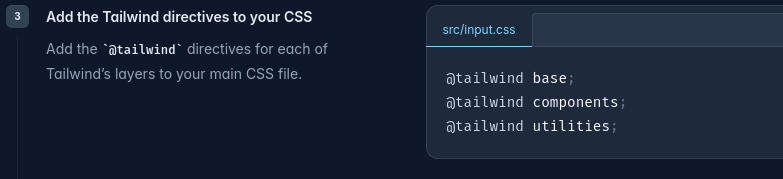
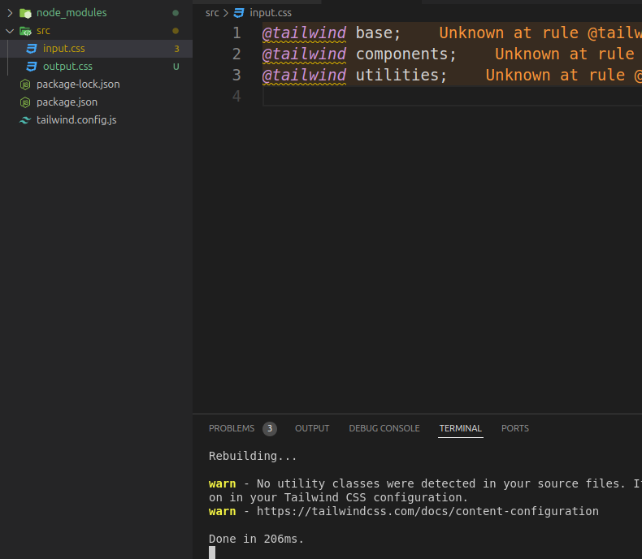

Tailwind
>Voltar
O que é e seus Benefícios
Acessos
Primeiros Passos (NodeJS)
Repositório e Instalação
Sobre o Autor e Este Projeto
>Voltar
O que é e seus Benefícios
Criado por Adam Wathan, Steve Schoger e Jonathan Reinink, em 1º de novembro de 2017,Tailwind CSS é um framework de CSS utilitário que foi criado com o objetivo de fornecer classes utilitárias prontas para estilização direta nos elementos HTML.
Rapidez no Desenvolvimento: Reduz a necessidade de escrever CSS personalizado, acelerando o processo
de desenvolvimento.
Manutenibilidade: Facilita a manutenção do código ao usar um padrão consistente de classes
utilitárias
Escalabilidade: É fácil de escalar, pois os estilos são aplicados diretamente nos componentes,
evitando conflitos de CSS.
Acessos
Primeiros Passos (NodeJS)
Intalar o NodeJS no seu computador. Como?
Artigo da Alura
Eu, usando linux fiz: (18/06/2024)
sudo snap install curl # version 8.1.2
depois: sudo apt install nodejs e y (Sim)
conforme imagem abaixo:

teste de versão: nodejs -v
resultado: v18.19.1
sudo apt install npm
Repositório e Instalação
Dentro de um Repositório Github de preferência, use os comando:
execute os dois

alterar o conteudo do arquivo tailwind.config.js e criar uma pasta src na raiz
 agora criar o arquivo input.css na pasta SRC e colar seu conteudo
Passos Finais: rodar comando
npx tailwindcss -i ./src/input.css -o ./src/output.css --watch

Criar arquivo index.html dentor da pasta SRC, criar estrutura e no HEAD colocar o código
link href="./output.css" rel="stylesheet"
Sobre o Autor e Este Projeto
Autor: Igor Dossin Lazzaretti
Portfólio: Acesse Aqui
Linkedin: Acesse Aqui
Este Projeto tem fins puramente educacionais.